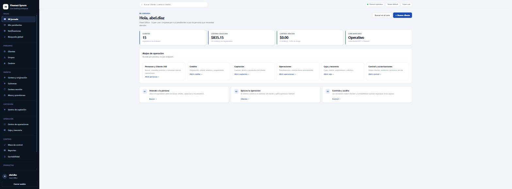
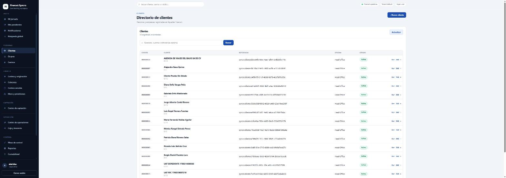
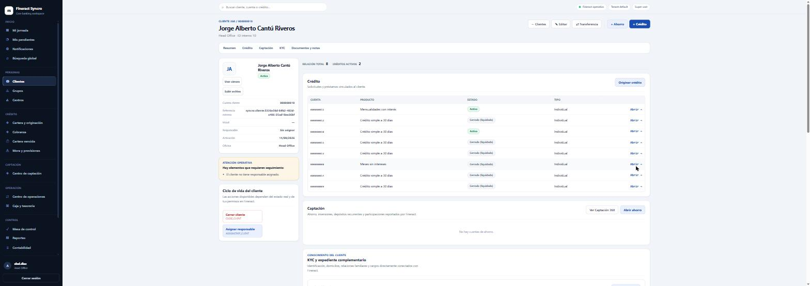
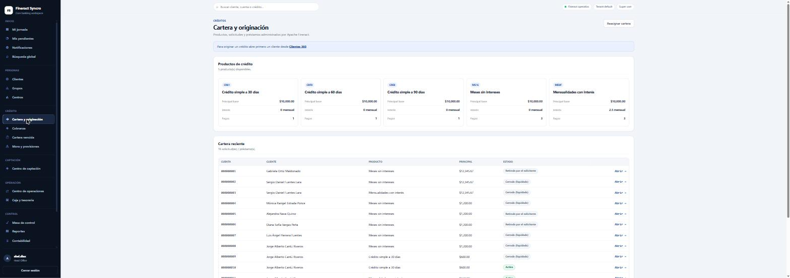
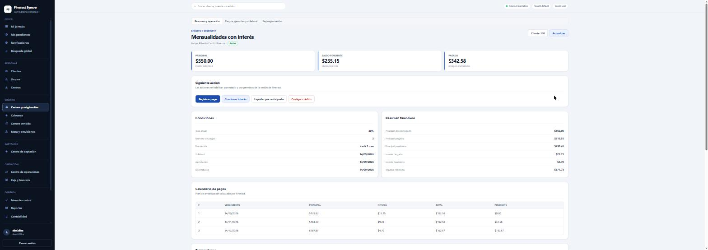
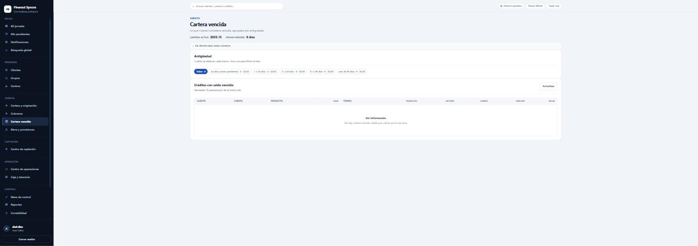
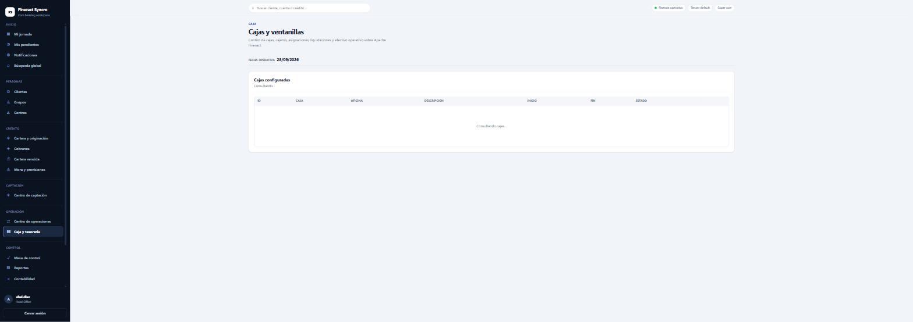
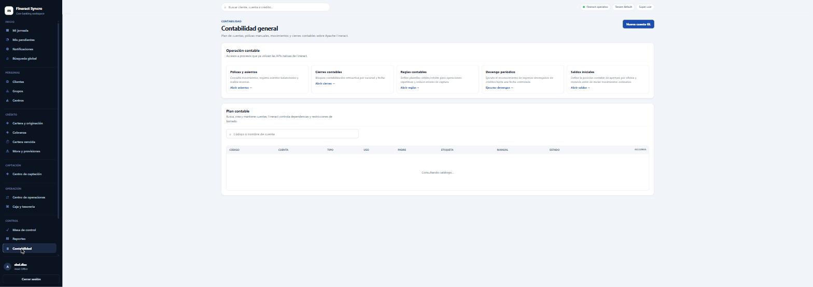
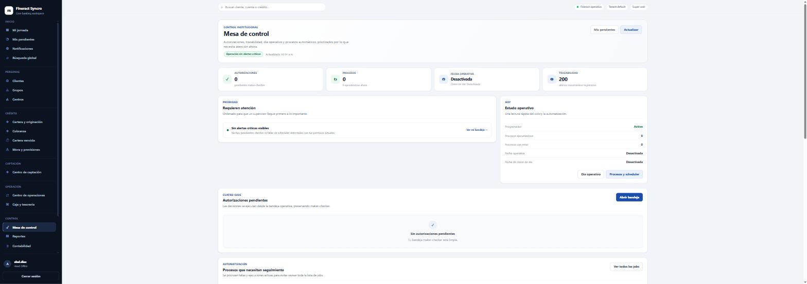
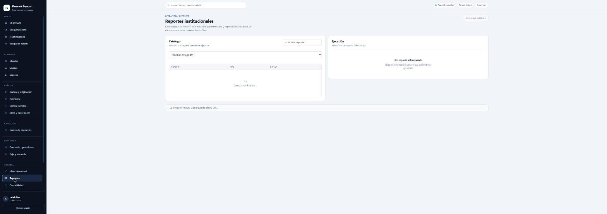

El core financiero: qué es, cómo piensa, y cómo se opera desde el portal. Esta parte se aplica a las instituciones que operan el core, con o sin ERP.
Antes de tocar una pantalla hay que entender los sustantivos. Un ERP piensa en documentos; un core financiero piensa en cuentas y su ciclo de vida. Un préstamo no es un documento que se emite: es una cuenta que nace, se aprueba, se desembolsa, se paga, se atrasa y se cierra, y cada uno de esos pasos es un hecho con fecha y con asiento contable.
| Concepto | Qué es |
|---|---|
| Oficina | La unidad organizativa. Forman un árbol: Head Office arriba y sucursales debajo. Todo cuelga de una oficina — clientes, préstamos, cajas, asientos— y la jerarquía determina qué ve cada usuario. |
| Personal (staff) | Los empleados de una oficina: asesores, cajeros, supervisores. Un cliente y un préstamo pueden tener responsable asignado. |
| Cliente | Persona o entidad. Tiene ciclo de vida propio: pendiente → activo → cerrado, y no puede tener préstamos si no está activo. |
| Grupo y Centro | Agrupaciones de clientes para metodología grupal —banca comunal, grupos solidarios—. Un grupo puede tener préstamos propios y reuniones. |
El producto es la plantilla; la cuenta es el caso. Se define una vez el producto «Crédito simple a 30 días» —con su plazo, su tasa, su moneda, sus cargos y sus cuentas contables— y a partir de ahí cada crédito que se origina es una cuenta de ese producto, que hereda sus reglas y puede desviarse sólo donde el producto lo permita.
| En el producto se define… | Qué controla |
|---|---|
| Principal mínimo, por omisión y máximo | Cuánto se puede prestar. |
| Número de pagos y frecuencia | El plazo y el ritmo: cada mes, cada 30 días, semanal. |
| Tasa y su periodicidad | Nominal mensual, anual, fija o variable. |
| Método de amortización | Cuota fija (francés) o principal igual. |
| Cargos y comisiones | De apertura, por pago tardío, por administración. |
| Moneda | Y sus decimales. |
| Cuentas contables | Contra qué cuentas se asienta cada hecho del préstamo. Sin esto el producto existe pero no contabiliza. |
Los estados importan porque las acciones disponibles dependen del estado: un préstamo aprobado se puede desembolsar o deshacer la aprobación; uno activo se puede pagar, reprogramar, condonar interés o castigar; uno cerrado, casi nada. El portal enseña sólo las acciones que ese estado permite, y ése es el mejor mapa del ciclo.
Fineract es multi-inquilino: una sola instalación atiende a varias instituciones, cada una con su propio esquema de base de datos, completamente separado. El inquilino se identifica en cada petición y aparece arriba a la derecha del portal (Tenant: default).
Fineract construye el esquema de un inquilino al arrancar. Crear uno nuevo obliga a reiniciar el servicio, con todas las instituciones operando. Por eso se preparan por lote en una ventana de mantenimiento y se entregan ya listos.
El portal está organizado por proceso, no por endpoint: el menú no reproduce la API de Fineract sino el día de quien trabaja. Cinco bloques.

| Bloque | Pantallas | Para qué |
|---|---|---|
| Inicio | Mi jornada · Mis pendientes · Notificaciones · Búsqueda global | Por dónde se empieza y qué espera decisión. |
| Personas | Clientes · Grupos · Centros | El expediente de quien opera contigo. |
| Crédito | Cartera y originación · Cobranza · Cartera vencida · Mora y provisiones | El negocio. |
| Captación | Centro de captación | Ahorro, depósitos y productos del cliente. |
| Operación | Centro de operaciones · Caja y tesorería | Transferencias, instrucciones permanentes, cajas y efectivo del día. |
| Control | Mesa de control · Reportes · Contabilidad | Maker-checker, auditoría, procesos automáticos y los libros. |


El recuadro «Atención operativa» señala lo que le falta a ese cliente para operar con normalidad — en el ejemplo, que no tiene responsable asignado. Y el Ciclo de vida de abajo a la izquierda enseña sólo las acciones que el estado real permite: si «Cerrar cliente» no está, es porque tiene cuentas vivas.


| Acción | Qué hace y cuándo se usa |
|---|---|
| Registrar pago | Aplica un abono con su fecha valor. Fineract lo reparte entre cargos, interés y principal según la configuración del producto — no a criterio de quien captura. |
| Condonar interés | Perdona interés devengado. Deja rastro y asiento propio. |
| Liquidar por anticipado | Calcula el monto para cerrar hoy y cierra la cuenta. |
| Castigar crédito (write-off) | Reconoce que no se va a cobrar: saca el saldo de la cartera vigente y lo lleva al gasto. Es una decisión contable, no operativa. |
| Reprogramación | Cambia el calendario de un préstamo vivo: prórroga, cambio de fecha, reestructura. |
Casi toda operación de un core pide una fecha, y no es la de hoy por omisión ni un adorno: es la fecha con la que el hecho entra en la contabilidad y con la que se recalcula el interés. Poner mal la fecha de un pago cambia el interés devengado y la mora, y corregirlo después obliga a deshacer la transacción.

Mora y provisiones es el paso siguiente: clasifica la cartera en tramos de riesgo y calcula la provisión que corresponde a cada tramo, según la política que la institución configure. Ese cálculo es el que produce el asiento de estimación preventiva.

El modelo es de teller bancario: una caja pertenece a una oficina y tiene vigencia; un cajero se asigna a la caja por un periodo; el efectivo se le asigna al empezar y se le liquida al terminar. Las operaciones en ventanilla se registran contra esa asignación, de modo que al final del día la caja cuadra o no cuadra, y se sabe de quién.

Las cuentas de Fineract tienen tipo (activo, pasivo, capital, ingreso, gasto), uso (detalle o encabezado) y una marca de si admiten asientos manuales. Las cuentas que el core usa automáticamente —cartera, interés por cobrar, ingreso por interés, castigos— normalmente se marcan como no manuales, por la misma razón que en el ERP: un asiento manual contra la cartera separa el mayor del auxiliar.
Fineract no contabiliza «préstamos»: contabiliza cada transacción del préstamo, con las cuentas que el producto declara. El mapeo típico:
| Hecho | Asiento |
|---|---|
| Desembolso | Dr. Cartera de crédito / Cr. Fondos (banco o caja) |
| Devengo de interés | Dr. Interés por cobrar / Cr. Ingreso por interés |
| Pago | Dr. Fondos / Cr. Cartera e interés por cobrar, en la proporción que toque |
| Cargo o comisión | Dr. Cargos por cobrar / Cr. Ingreso por cargos |
| Castigo | Dr. Gasto por castigos / Cr. Cartera |
| Provisión | Dr. Gasto por estimación / Cr. Estimación preventiva |
Cada producto declara si contabiliza en base efectivo —sólo cuando el dinero se mueve— o en base devengado, y en este último caso si el devengo es periódico —lo corre un proceso programado— o al vencimiento. Es la decisión contable más importante del producto y no se cambia con cartera viva sin consecuencias.
El proceso Devengo periódico de la pantalla de contabilidad es el que ejecuta ese reconocimiento hasta una fecha dada.
Un cierre contable en Fineract bloquea la contabilización retroactiva por oficina y fecha: después del cierre no se pueden registrar asientos con fecha anterior. Los saldos iniciales definen la posición de apertura por oficina y moneda antes de iniciar movimientos — se capturan una sola vez, al arrancar la institución.
Son plantillas de débito y crédito para operaciones repetitivas: en vez de teclear el asiento, se elige la regla y se capturan los importes. Reducen el error de captura en lo que se hace todos los días.

Es la separación de funciones del core: para las acciones que la institución elija, quien las captura no las confirma. La operación queda pendiente y un segundo usuario con permiso la aprueba o la rechaza desde la bandeja.
Se configura acción por acción. La regla práctica: se activa en lo que mueve dinero o cambia condiciones —desembolso, condonación, castigo, reprogramación, alta de producto— y no en lo que sólo consulta.
| Concepto | Qué hace |
|---|---|
| Fecha operativa | Cuando está activada, el core sólo acepta operaciones con esa fecha. Es lo que impide capturar de ayer o de mañana por descuido. |
| Cierre de día | Avanza la fecha operativa y deja el día anterior en firme. |
| Programador (scheduler) | Corre los procesos automáticos: devengo, clasificación de mora, provisiones, intereses de ahorro, recordatorios. |
El contador de procesos con error de la mesa de control es el que hay que mirar cada mañana. Un proceso de devengo que falló no avisa a nadie por su cuenta: se nota semanas después, cuando el estado de resultados no cuadra con la cartera.

Los datos se calculan en el core, no en el portal: el reporte es el de Fineract, con sus parámetros, y el portal sólo lo ejecuta y lo presenta.
Fineract tiene su propio modelo de permisos, independiente del ERP: roles que agrupan permisos por entidad y acción, y usuarios que pertenecen a una oficina. El alcance de un usuario es su oficina y las que cuelgan de ella.
El acceso al portal es por la identidad de SUMA (capítulo 0.4), y Fineract conserva los permisos bancarios y operativos: quién eres lo dice SUMA; qué puedes hacer lo dice Fineract.
Abre un cliente en Cliente 360 y origina un crédito de un producto a plazo simple. Revisa el calendario propuesto antes de guardar. Apruébalo, desembólsalo y registra un pago parcial con fecha de hace tres días. Después ve a Contabilidad → Pólizas y asientos y localiza los asientos del desembolso y del pago. Por último, mira en Cartera vencida si ese crédito aparece en algún tramo y por qué.